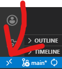
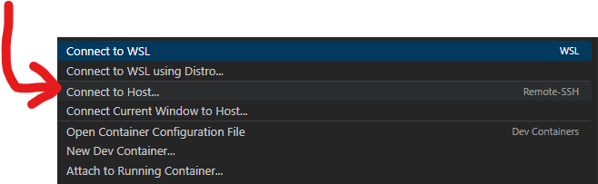
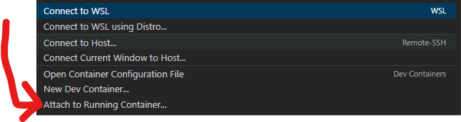
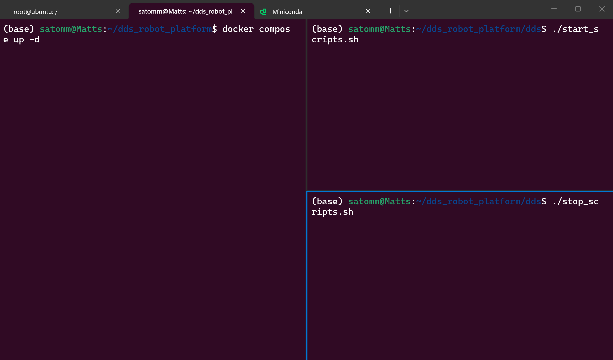
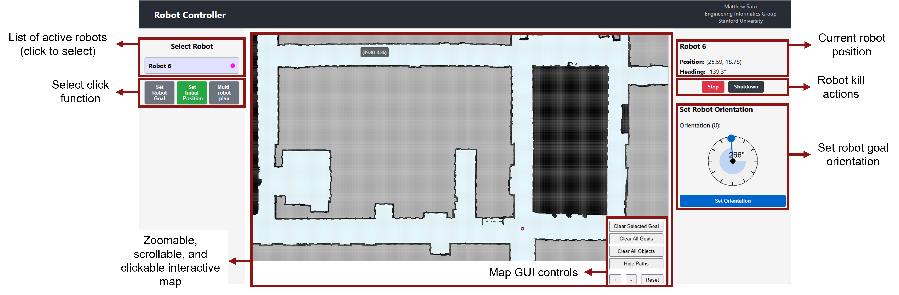

Operation Guide
Learn to Operate the Mobile Robot
Getting Started
Welcome to the operation of the mobile robot! This guide assumes you have successfully completed construction and setup. Your robot should be powered on, connected to WiFi, and all systems verified.
Getting to Know The Mobile Robot
Use this section to introduce the robot visually and explain the purpose of each major component. Add labeled photos and keep each explanation short and practical.
Full Robot Overview
First, let's go layer by layer to understand everything on the robot.
Layer 1
The first layer contains the main circuit board for motor control/sensor integration, the drivetrain, and environmental sensor, and a motor on/off switch.

-
Main circuit board: Handles motor control and sensor integration for the robot. On the front of the circuit board there are 3 ports for connecting power:
- A Micro-USB port for connecting the 5V battery. Note: There is an additional Micro-USB port on the side of the circuit board. DO NOT plug the 5V battery into this port. This port is used for serial communication with a laptop (debugging purposes only).
- 2 Tamiya Style blocks for connecting the 7.2 NiMH motor batteries.
- Drivetrain: Consists of 2 DC motors, spider couplers, 6 mm D-shafts, pillow blocks, and wheels.
- Environmental sensor: Detects surroundings so the robot can respond to its environment.
- Motor on/off switch: Turns power on/off to both the motors (14.4 V) and the circuit board (5 V). You must turn this switch on prior to operating the robot. The indicator light will turn red when idle, and green when activated by the ROS code.
Layer 2
This layer contains the various batteries, the NVIDIA Jetson onboard computer, and the microphone processing circuit board.

- Batteries: Provide power for the robot’s electronics and motor systems. There are 3 kinds of batteries and 4 total batteries on board:
- 5 V USB battery: Powers the main circuit board.
- 2x 7.2 V NiMH motor batteries: Powers the motors for movement.
- 12 V Li-ion battery: Powers the NVIDIA Jetson onboard computer.
- NVIDIA Jetson onboard computer: Runs the robot software and handles processing. Connects via wires to the main circuit board and the microphone processing board. Note: The 12 V battery should be directly connected to the Jetson. This battery must be turned on prior to use. When not actively running the robot, I recommend plugging in the battery via the split cable.
- Microphone processing circuit board: Processes audio input for voice and sound-related features.
Layer 5
Layer 5 contains a single Orbecc Astra RGB-D camera and 2x ICS-43434 MEMS omnidirectional microphones

- RGB-D Camera: Provides image and depth sensing capabilities. Should be plugged into the NVIDIA Jetson via USB.
- Microphones: Capture audio input for voice and sound-related features. Should be plugged into the microphone processing circuit board via the provided MOLEX connections.
Layer 6
Layer 6 contains a 2D LiDAR sensor, a touchscreen display with speakers, and a USB camera for facial recognition.

- LiDAR: An RPLIDAR A2M12 LiDAR sensor, which should be connected to the NVIDIA Jetson via USB.
- Touchscreen Display: Provides a user interface for interacting with the robot and displaying information. The HDMI cable should be plugged into the NVIDIA Jetson using an HDMI-Display Port adapter. The USB cable should be plugged into the NVIDIA Jetson via USB. The HDMI is for display and the USB is for touch.
- USB Camera: Used for facial recognition and other visual applications. The USB cable should be plugged into the NVIDIA Jetson via USB.
How to Turn the Robot On and Off
Turning On the Robot
To turn on the robot, follow these steps:
- Ensure all batteries are properly connected and charged.
- Turn on the 12 V Li-ion battery for the NVIDIA Jetson. This will power on the onboard computer.
- Turn on the motor on/off switch to power the main circuit board and motors. The indicator light will turn red when idle.
- Wait for the NVIDIA Jetson to boot up and establish connections with the peripherals. This may take a minute or two.
- Once the Jetson is fully booted, the robot is ready for operation. The indicator light on the motor switch will turn green when activated by the ROS code.
Turning Off the Robot
To turn off the robot, follow these steps:
- Use the appropriate shutdown command to safely power down the NVIDIA Jetson. This can be done via SSH or directly on the device. The command is:
sudo shutdown -h now. Alternatively, use the touchscreen to turn off the Jetson through the Ubuntu GUI. - Wait for the Jetson to fully shut down. Turn off the 12 V Li-ion battery for the NVIDIA Jetson.
- Turn off the motor on/off switch to cut power to the main circuit board and motors.
Charging the Batteries
- 5 V USB battery: Simply remove the battery and plug into a USB port on a wall adapter or laptop.
- 7.2 V NiMH motor batteries: Use the provided Tamiya-style smart chargers to charge these batteries. I usually just disconnect these batteries from the main circuit board and connect the chargers directly without removing the batteries from the robot.
- 12 V Li-ion battery: Use the provided DC barrel jack charger to charge this battery. It can be charged while plugged into the robot or separately. To achieve a full charge, disconnect the battery from the Jetson, turn the battery on, and plug the charger in.
Preparing the Mobile Robots
System Startup
Power on the NVIDIA Jetson and the Microcontroller.
Establish SSH connection to the robot:
Load the spidev module:
Start the Docker Containers
Included in the files you downloaded is a file that lets our GUI start up the robots from a remote machine. If using this feature, use the following command to start the ROS Container:
If you are not using my GUI (i.e., using RVIZ), or doing other development work, start the ROS Container using:
Open other terminals and enter the container (as needed):
Start the Gemini Container (optional):
Accessing/Editing Code
I use VS Code to access the code on the NVIDIA Jetsons.
Within VS Code, click the Remote Explorer button (lower left corner), then click "Connect to Host".


Add a new SSH Host, or click an existing host, and log in using the IP Address and the jetson password (jetson)
To gain access to the Docker container running on the Jetson, click the Remote Explorer button again, then click "Attach to Running Container".

Select the correct docker container, login, and now you can access and edit all code.
User GUI/Communication
Start the user DDS node
Open three terminals in WSL or your Unix terminal (Mac/Linux)
Start the Docker containers in the first terminal
docker compose up -d
To stop the containers, run:
In the second terminal, start the DDS scripts:
./start_scripts.sh
export AGENT_ID=xxx in the ~/.bashrc file.The DDS scripts can be stopped by running
./stop_scripts.sh
in the third terminal.
After running these commands, the user node will be active and participate in the DDS network.
Start the GUI
If you have installed the GUI as an executable on your machine, simply find the executable and run it.
If you have not installed the GUI as an executable, you must run it with Node.js. Navigate to the GUI directory and start the server:
serve -s build
Now go to http://localhost:3000 in your web browser to view the GUI.
An example of how I set up my terminal for docker and DDS communications is as follows:

Using the GUI
GUI Overview
The GUI provides a web-based interface for monitoring and controlling the robots on your machine.

Main Features:
- Robot Status Panel: Shows online robots
- Click Function: Choose what clicking on the map does
- Map Visualization: Displays robot positions and environment map
- Robot start and kill commands: Allows the user to start and kill the robot from the GUI
Select Robot
Click on a robot in the status panel to select it for control
Robot Orientation
Set the robot orientation when setting a goal or initial position
Clicking Function
Selecting "Set Robot Goal" means clicking on the map will set goal position for a robot. Selection "Set Initial Position" means clicking will set the robot's starting position.
Robot Start Actions
Add the IP address of your robot and save the settings. In the future, select your robot from the dropdown box and click the "Start" button.
Robot Kill Actions
Selecting "Stop" will stop robot motion. Selecting 'Shutdown' will kill all ROS nodes.
Workflow
Follow these steps to control a robot with the GUI:
Step 1: Connect to Robot
When a mobile robot enters the network, it will automatically appear in the Robot Status Panel on the left side of the GUI.
To start a robot, either use the built in start feature in the GUI or run a launch file via SSH.
Step 2: Set Initial Position
Select the robot from the status panel, then choose "Set Initial Position".
Adjust the orientation using the orientation slider to match the robot's approximate initial orientation.
Click on the map where the robot is currently located to set its approximate initial position.
Step 3: Send Robot to Goal
After the robot is initialized, change the clicking function to "Set Robot Goal".
Click anywhere on the map to set a navigation goal for the robot.
The robot will plan a path and start moving toward the goal location.
Step 4: Shutdown the Robot
After you are done with your robot, click the robot in the status panel and select "Shutdown".
Operating the Mobile Robots
Launch Files
There are several launch files used to support running the mobile robots.
Below is a summary of the important launch files:
- minimal.launch - Launches the minimal robot with connection to the MCU.
- short.launch - Launches the full software stack for the short robot.
- tall.launch - Launches the full software stack for the tall robot.
- sense_and_map.launch - Launches the software stack for creating a map using SLAM
Some optional arguments include:
- car - Set to true if using a mobile robot with wheels at the back (default: false)
- patrol - Set to true if mobile robot should follow the defined patrol path (default: false)
To run any of the launch files, follow this format:
Creating a Map
Start the mapping software by running the following command:
In a second terminal, start robot teleoperation:
Use the keyboard controls to move the robot around and create a map of the environment. The robot should visit all areas of the space to build a comprehensive map.
Once the mapping is complete, save the map using the following command:
My navigation software requires (and allows) for the human to modify the map. Make a copy of the map with the name <map_name>_mod.pgm. Use some image editing software (i.e., GIMP) to add barriers that you wish the mobile robot to avoid. Now, copy three (3) files to the ~/workspace/catkin_ws/src/mattbot_mcl/maps directory:
<map_name>.yaml<map_name>.pgm<map_name>_mod.pgm
Last, create an occupancy grid for the map by running
within the ~/workspace/catkin_ws/src/mattbot_mcl/scripts directory.
The last thing to do is to copy the json version of the map to the user GUI directory. Copy the file:
to your machine running the user GUI. The file should be saved in the dds_robot_platform/dds directory named as user_map.json.
Normal Operation of the Robots
To run the mobile robots, simply call the appropriate launch file. For example, for a tall mobile robot:
The mobile robot will connect to the DDS network, and you can control the mobile robot goals via the GUI.
If your mobile robot is in a car configuration (wheels at the back, casters at the front), you must include the car argument:
Shutting down the robots
To shut down the software stack, simply perform a ctrl+c command in the terminal. Alternatively, you can use the following command:
To exit the docker containers, simply run
in the terminal.
To shutdown the Jetson, run the following command:
Please shutdown using this command rather than simply powering off the device.